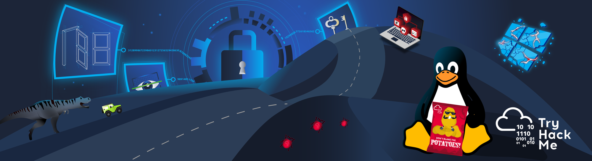
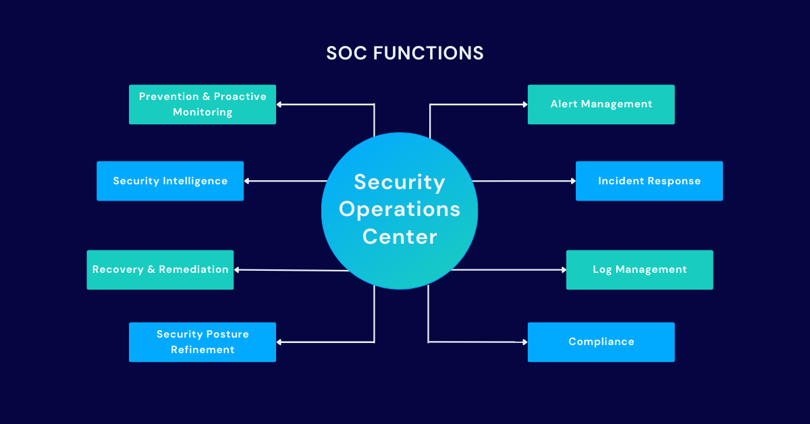

مرحبا انا يوهان
مبرمج ومختبر اختراق وطالب امن دفاعي سيبراني


Hello.
طالب في tryhackme
tryhackme
My Skills.

Programming (java scribt)
JavaScript (JS)
هي لغة برمجة خفيفة الوزن يتم تفسيرها
(أو تجميعها في الوقت
المناسب) مع وظائف من الدرجة الأولى . على الرغم من أنها معروفة كلغة البرمجة النصية
لصفحات
الويب، إلا أن العديد من البيئات غير المستعرضة تستخدمها أيضًا، مثل
Node.js وApache CouchDB وAdobe Acrobat

مركز العمليات الأمنية lvl 1
?ماهو مركز عمليات امنية
يقوم محللو
السيبرانية مركز العمليات الأمنية مسؤول عن حماية المؤسسة من التهديدات SOC بمراقبة شبكة المؤسسة على مدار الساعة والتحقيق في أي حوادث أمنية محتملة
إقرأ المزيد

مطور الويب
مطور ويب هو مطور برمجيات أو مهندس برمجيات متخصص في تطوير تطبيقات الشبكة العنكبوتية العالمية (أو الويب)،
أو تطبيقات الشبكات
الموزعة التي تشغل عبر بروتوكول نقل النص الفائق (http) من خادم ويب إلى متصفح ويب.
اذا وصلت لهذي نقطة ف اشكرك على وقتك